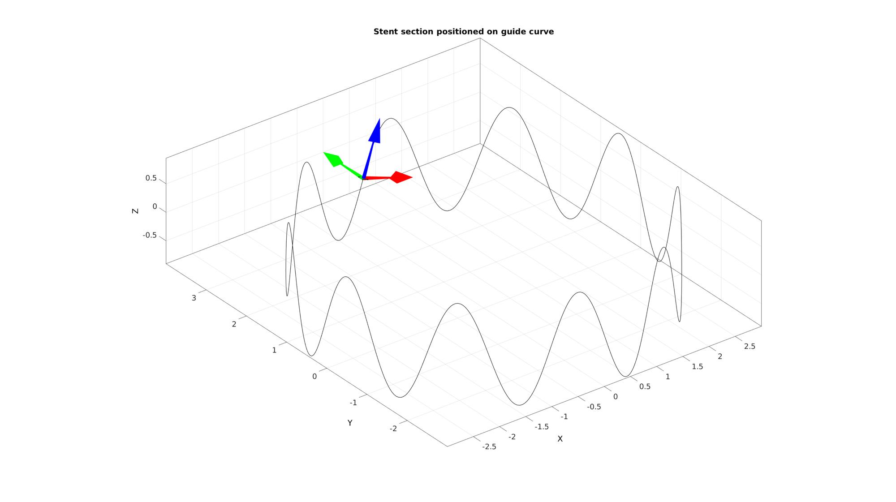
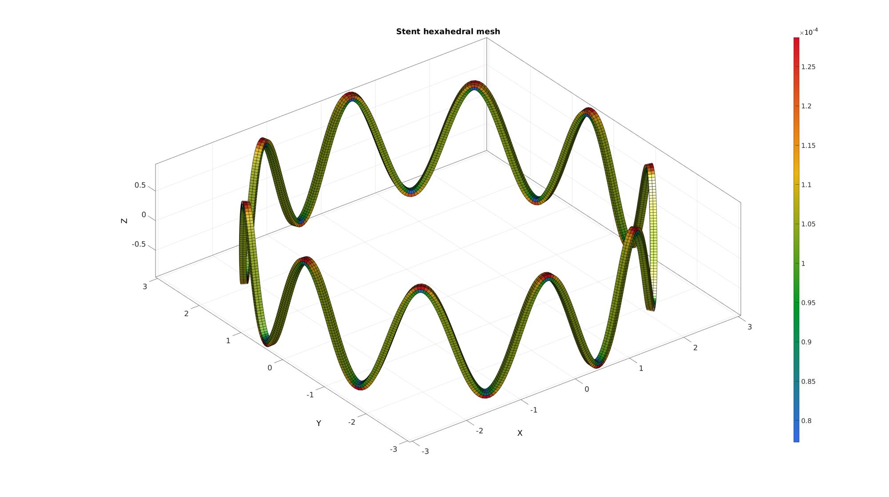
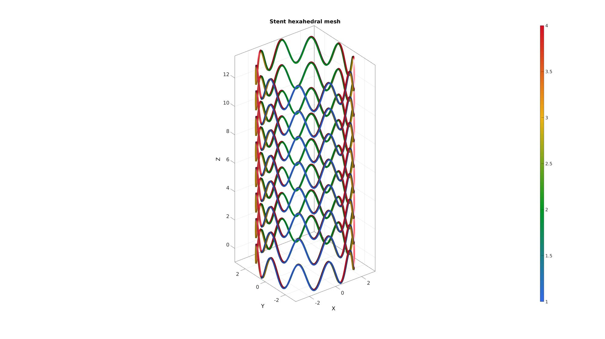
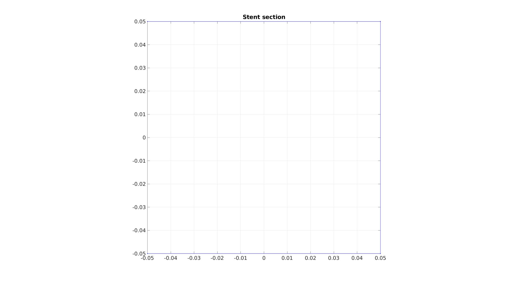
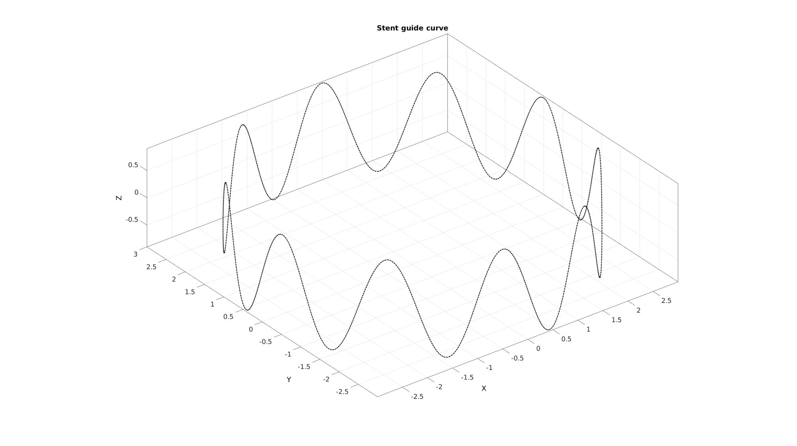
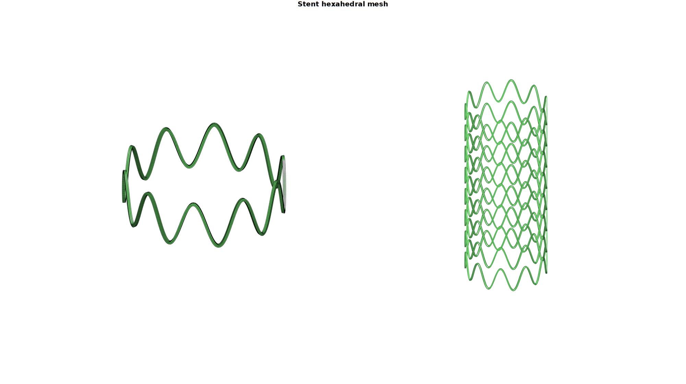
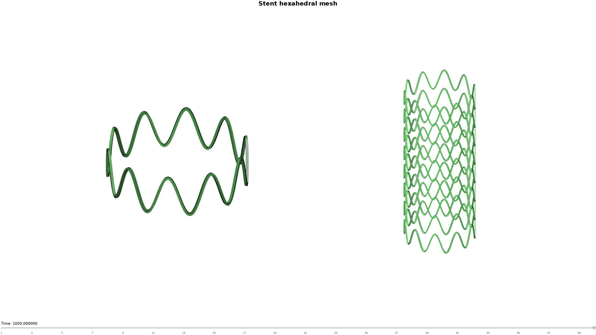
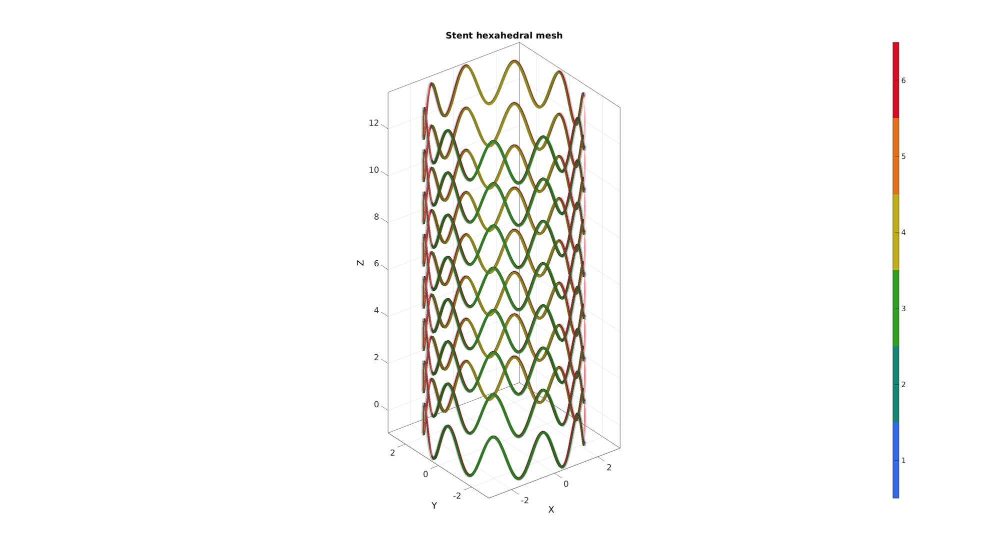

DEMO_stent_hexahedral_sweeping
Below is a demonstration for:
- Creating a hexahedral mesh for a vascular stent by sweeping allong a curve and copying over the segments.
Contents
- Keywords
- Contol parameters
- Build stent section
- Create guide curve
- Position stent section at the start and end of the guide curve
- Sweeping section allong curve
- Construct hexahedral mesh
- Refine mesh
- Create additional segments
- Create face labelling to construct node sets
- Create node set for inner surface nodes
- Setup structure to define an Abaqus inp file
- Creating the INP file
Keywords
- Sweeping, sweepLoft
- Hexahedral mesh
- stent, vascular
- Exporting Abaqus, .inp
clear; close all; clc;
plot settings
fontSize=25; markerSize=10; lineWidth=1;
Contol parameters
stentRadius=3; %The outer radius of the stent numPeriodsWave=10; %The number of periods to use for a sinusoidal modulation numStepsPeriod=100; %Number of sweeping steps allong a single period segment for sweeping waveAmplitude=0.9; %Amplitude of the sinusoidal modulation stentSectionHeight=0.1; %Height of the stent wire stentSectionWidth=0.1; %Width of the stent wire numStepsCircumference=(numPeriodsWave*numStepsPeriod)+1; %Number of sweeping steps across curve overSampleFactorCurve=10; %Oversample factor curve numSegments=8; %Number of stent segments to stack segmentAxialOffset=waveAmplitude*2; %Axial offset for stacking stents
Build stent section
The rectangular stent wire section is created here.
V_section=[-stentSectionWidth/2 stentSectionHeight/2 0; ... stentSectionWidth/2 stentSectionHeight/2 0; ... stentSectionWidth/2 -stentSectionHeight/2 0; ... -stentSectionWidth/2 -stentSectionHeight/2 0; ... ];
Visualize stent section
cFigure; hold on; title('Stent section','fontSize',fontSize); plotV(V_section,'b.-','lineWidth',lineWidth,'MarkerSize',markerSize); view(2); axis tight; axis equal; grid on; box on; set(gca,'fontSize',fontSize); drawnow;

Create guide curve
The sweepLoft (see HELP_sweepLoft) is created here. First and angle based parameterization is created. Next this curve is evenly sample across the curve length (see HELP_evenlySampleCurve).
t=linspace(0,2*pi,numStepsCircumference*overSampleFactorCurve); %Angles t=t(1:end-1); %Remove last point so it is not closed for resampling x=stentRadius.*sin(t); %x-coordinates y=stentRadius.*cos(t); %y-coordinates z=waveAmplitude.*sin(numPeriodsWave*t); %z-coordinates V_guide_curve=[x(:) y(:) z(:)]; %Collected curve nodes [V_guide_curve] = evenlySampleCurve(V_guide_curve,numStepsCircumference-1,'pchip',1); %Resample curve evenly V_guide_curve(end+1,:)=V_guide_curve(1,:); %Append start to end so it is a closed loop
Visualize guide curve
cFigure; hold on; title('Stent guide curve','fontSize',fontSize); plotV(V_guide_curve,'k.-','lineWidth',lineWidth,'MarkerSize',markerSize); axisGeom; drawnow;

Position stent section at the start and end of the guide curve
Next the section is translated and rotated so it is placed at the start of the guide curve such that the curve normal points allong the curve.
% Create rotation matrix n3=vecnormalize(V_guide_curve(2,:)-V_guide_curve(1,:)); %Out of section normal direction z ish direction [~,indMin]=min(dot(n3(ones(1,2),:),[1 0 0; 0 1 0],2)); %Get index most appropriate initial other axis switch indMin case 1 n1=[1 0 0]; %Initialized x direction n2=vecnormalize(cross(n3,n1)); %y ish direction n1=vecnormalize(cross(n2,n3)); %Proper x ish direction R=[n1; n2; n3]; %Rotation matrix case 2 n2=[0 1 0]; %Initialized y direction n1=vecnormalize(cross(n2,n3)); %x ish direction n2=vecnormalize(cross(n3,n1)); %Proper y ish direction R=[n1; n2; n3]; %Rotation matrix end p1=V_guide_curve(1,:); %The start node V_section=V_section*R; %Rotate the section V_section=V_section+p1(ones(size(V_section,1),1),:); % Translate coordinate to start
Visualize guide curve
cFigure; hold on; title('Stent section positioned on guide curve','fontSize',fontSize); plotV(V_guide_curve,'k-','lineWidth',1); plotV(V_section,'k.-','lineWidth',lineWidth,'MarkerSize',markerSize); quiverVec(p1,n1,1,'r'); quiverVec(p1,n2,1,'g'); quiverVec(p1,n3,1,'b'); axisGeom; drawnow;
Sweeping section allong curve
Normally sweepLoft produces patch data as an output (e.g. faces and vertices). However these outputs are supressed here and the coordinate mesh output is instead used to create a hexahedral mesh. See also HELP_sweepLoft
numTwist=0; %Number of additional twists of loft feature around guide curve numStepsSweep=numStepsCircumference; %Number of steps for loft feature from sketch 1 to sketch 2 plotOn=0; %Turn on plotting to view lofting behaviour [~,~,~,S]=sweepLoft(V_section,V_section,n3,n3,V_guide_curve,numStepsSweep,numTwist,plotOn);
Construct hexahedral mesh
X=S.X'; Y=S.Y'; Z=S.Z'; %Coordinate matrices V=[X(:) Y(:) Z(:)]; %Create node list F=reshape((1:1:size(V,1)),4,size(V,1)/4)'; %All top and bottom faces E=[F(2:end,:) F(1:end-1,:)]; %The hexahedral elements [E,V]=mergeVertices(E,V); %Merge nodes (start and end are not shared yet) C=hexVol(E,V); %Get hexahedral element volumes [F,CF]=element2patch(E,C); %Create face data for plotting
Visualize hexahedral mesh
cFigure; hold on; title('Stent hexahedral mesh','fontSize',fontSize); plotV(V_guide_curve,'k-','lineWidth',3); gpatch(F,V,CF,'k',1); % patchNormPlot(F,V); %Check normal directions colormap gjet; colorbar; axisGeom; camlight headlight; drawnow;

Refine mesh
The swept mesh can be refined through slitting. The splitting can be homogeneous or only in a particular direction (see HELP_subHex|) Split method explanation: 1: Overall splitting in all directions 2: Split allong curve direction 3: Split axially 4: Splint inward
splitMethod=3; nRefine=1; [E,V,Cs]=subHex(E,V,nRefine,splitMethod); splitMethod=4; nRefine=1; [E,V,Css]=subHex(E,V,nRefine,splitMethod); C=hexVol(E,V); %Get hexahedral element volumes Cs=Cs(Css); %Colors for original element indices (and sweeping steps) [F,CF]=element2patch(E,C); %Create face data
Visualize hexahedral mesh
cFigure; hold on; title('Stent hexahedral mesh','fontSize',fontSize); plotV(V_guide_curve,'k-','lineWidth',3); gpatch(F,V,CF,'k',1); % patchNormPlot(F,V); colormap gjet; colorbar; axisGeom; camlight headlight; drawnow;
Create additional segments
E_cell=repmat({E},1,numSegments);
V_cell=repmat({V},1,numSegments);
for q=1:1:numSegments
V_cell{q}(:,3)=V_cell{q}(:,3)+((q-1)*segmentAxialOffset);
end
[ET,VT,CT]=joinElementSets(E_cell,V_cell);
[FT,CTF]=element2patch(ET,CT); %Create face data for plotting
Create face labelling to construct node sets
[indBoundary]=tesBoundary(FT,VT); faceMarker=ones(size(ET,1),1)*(1:6); %The 6 face colors for the hexahedral faces faceMarker=faceMarker(:); %Force as a column FTb=FT(indBoundary,:); %Select the boundary faces (which will exclude tops (1) and bottoms (2)) faceBoundaryMarker=faceMarker(indBoundary,:)-2; %Get boundary colors and subtract 2 so they are 1-4
Visualize face labels
cFigure; hold on; title('Stent hexahedral mesh','fontSize',fontSize); gpatch(FTb,VT,faceBoundaryMarker,'none',1); % patchNormPlot(F,V); %Check normal directions colormap gjet; colorbar; axisGeom; camlight headlight; drawnow;
Visualize composed segments and animate sweep
hf=cFigure; gtitle('Stent hexahedral mesh',fontSize); subplot(1,2,1); hold on; plotV(V_guide_curve,'k-','lineWidth',3); hp=gpatch(F,V,'gw','k',1); plotV(V_guide_curve,'k-','lineWidth',3); axisGeom; camlight headlight; axis off; axis manual; subplot(1,2,2); hold on; gpatch(FT,VT,'gw','none',1); axisGeom; camlight headlight; lighting gouraud axis off; drawnow;  
[F,CFs]=element2patch(E,Cs); %Create face data for plotting nSteps=40; %Number of animation steps animStruct.Time=round(linspace(1,max(CFs(:)),nSteps));%Create the time vector for q=1:1:nSteps F_now=F(ismember(CFs,1:animStruct.Time(q)),:); %Set entries in animation structure animStruct.Handles{q}=hp; %Handles of objects to animate animStruct.Props{q}={'Faces'}; %Properties of objects to animate animStruct.Set{q}={F_now}; %Property values for to set in order to animate end anim8(hf,animStruct);
Create node set for inner surface nodes
FTb_inner=FTb(faceBoundaryMarker==2,:); %Inner faces indicesNodesInner=unique(FTb_inner(:)); %Inner nodes indicesElementsInner=find(sum(ismember(ET,indicesNodesInner),2)==4); %Inner elements
Visualize face labels
[F_inner_elements]=element2patch(ET(indicesElementsInner,:)); %Create face data for plotting C_side=ones(numel(indicesElementsInner),1)*(1:1:6); C_side=C_side(:); cFigure; hold on; title('Stent hexahedral mesh','fontSize',fontSize); gpatch(FTb,VT,'kw','none',0.2); % gpatch(FTb_inner,VT,'gw','k',1); gpatch(F_inner_elements,VT,C_side,'none',1); % plotV(VT(indicesNodesInner,:),'g.','MarkerSize',25); colormap(gjet(6)); icolorbar; axisGeom; camlight headlight; drawnow;
Setup structure to define an Abaqus inp file
%%--> Heading abaqus_spec.Heading.COMMENT{1}='Job name: ABAQUS inp file creation demo'; abaqus_spec.Heading.COMMENT{2}='Generated by: GIBBON'; %%--> Preprint abaqus_spec.Preprint.ATTR.echo='NO'; abaqus_spec.Preprint.ATTR.model='NO'; abaqus_spec.Preprint.ATTR.history='NO'; abaqus_spec.Preprint.ATTR.contact='NO'; %--> Part % Node nodeIds=(1:1:size(VT,1))'; abaqus_spec.Part.COMMENT='This section defines the part geometry in terms of nodes and elements'; abaqus_spec.Part.ATTR.name='Stent'; abaqus_spec.Part.Node={nodeIds,VT}; % Element elementIds=(1:1:size(ET,1))'; abaqus_spec.Part.Element{1}.ATTR.type='C3D8';%'C3D8R'; abaqus_spec.Part.Element{1}.VAL={elementIds,ET}; % Element sets abaqus_spec.Part.Elset{1}.ATTR.elset='Set-1'; abaqus_spec.Part.Elset{1}.VAL=elementIds; surfaceElementSetName='elementSetSideSurface'; abaqus_spec.Part.Elset{2}.ATTR.elset=surfaceElementSetName; abaqus_spec.Part.Elset{2}.ATTR.internal=''; %Remains hidden uppon import abaqus_spec.Part.Elset{2}.VAL=indicesElementsInner(:); % Surfaces sidePick=5; abaqus_spec.Part.Surface{1}.ATTR.type='ELEMENT'; abaqus_spec.Part.Surface{1}.ATTR.name=[surfaceElementSetName,'_side',num2str(sidePick)]; abaqus_spec.Part.Surface{1}.VAL={surfaceElementSetName,['S',num2str(sidePick)]}; % Sections abaqus_spec.Part.Solid_section.ATTR.elset='Set-1'; abaqus_spec.Part.Solid_section.ATTR.material='Elastic'; %--> Assembly abaqus_spec.Assembly.ATTR.name='Assembly-1'; abaqus_spec.Assembly.Instance.ATTR.name='Stent-assembly'; abaqus_spec.Assembly.Instance.ATTR.part='Stent'; abaqus_spec.Assembly.Nset{1}.ATTR.nset='Set-1'; abaqus_spec.Assembly.Nset{1}.ATTR.instance=abaqus_spec.Assembly.Instance.ATTR.name; abaqus_spec.Assembly.Nset{1}.VAL=indicesNodesInner(:);
%%--> Material abaqus_spec.Material.ATTR.name='Elastic'; abaqus_spec.Material.Elastic=[0.5 0.4]; %%--> Step abaqus_spec.Step.ATTR.name='Step-1'; abaqus_spec.Step.ATTR.nlgeom='YES'; abaqus_spec.Step.Static=[0.1 1 1e-5 0.1]; % % Boundary % abaqus_spec.Step.Boundary{1}.VAL={'Set-1',[1,1]}; % abaqus_spec.Step.Boundary{2}.VAL={'Set-2',[2,2]}; % abaqus_spec.Step.Boundary{3}.VAL={'Set-3',[3,3]}; % abaqus_spec.Step.Boundary{4}.VAL={'Set-4',[3,3],-0.1}; %Output abaqus_spec.Step.Restart.ATTR.write=''; abaqus_spec.Step.Restart.ATTR.frequency=0; abaqus_spec.Step.Output{1}.ATTR.field=''; abaqus_spec.Step.Output{1}.ATTR.variable='PRESELECT'; abaqus_spec.Step.Output{2}.ATTR.history=''; abaqus_spec.Step.Output{2}.ATTR.variable='PRESELECT'; % abaqus_spec.Step.Node_print.ATTR.nset='all'; % abaqus_spec.Step.Node_print.ATTR.frequency = 1; % abaqus_spec.Step.Node_print.VAL='COORD'; % abaqus_spec.Step.El_print.VAL='S';
Creating the INP file
You can use abaqusStruct2inp to write the structure data to a file.
%Create file name for INP file defaultFolder = fileparts(fileparts(mfilename('fullpath'))); savePath=fullfile(defaultFolder,'data','temp'); fileName=fullfile(savePath,'tempModel.inp'); [~,fileNamePart,~]=fileparts(fileName); % Export INP file abaqusStruct2inp(abaqus_spec,fileName);

GIBBON www.gibboncode.org
Kevin Mattheus Moerman, gibbon.toolbox@gmail.com
GIBBON footer text
License: https://github.com/gibbonCode/GIBBON/blob/master/LICENSE
GIBBON: The Geometry and Image-based Bioengineering add-On. A toolbox for image segmentation, image-based modeling, meshing, and finite element analysis.
Copyright (C) 2019 Kevin Mattheus Moerman
This program is free software: you can redistribute it and/or modify it under the terms of the GNU General Public License as published by the Free Software Foundation, either version 3 of the License, or (at your option) any later version.
This program is distributed in the hope that it will be useful, but WITHOUT ANY WARRANTY; without even the implied warranty of MERCHANTABILITY or FITNESS FOR A PARTICULAR PURPOSE. See the GNU General Public License for more details.
You should have received a copy of the GNU General Public License along with this program. If not, see http://www.gnu.org/licenses/.